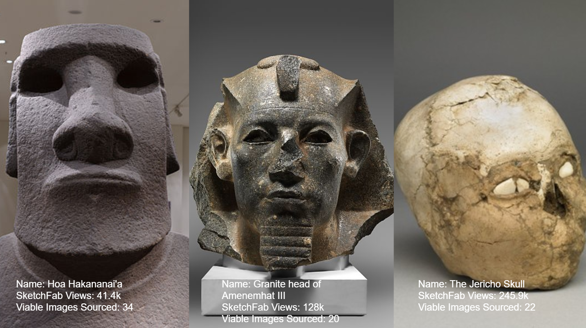
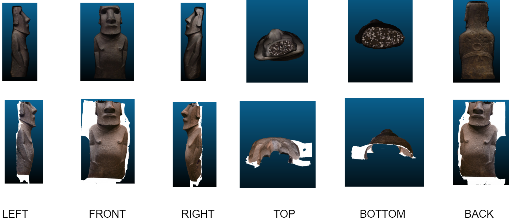

Introduction
Paul Docherty’s piece,
“3D Modelling the Bust of Queen Nefertiti,” explored creating 3D models with images found free online. After reading, I wondered how viable his methods were. In this project I utilized Agisoft Metashape to create 3D models of objects in the British Museum’s online SketchFab library using only images that I found online. I selected to use 3D scanned objects from the British Museums collections so I would have a control group to compare my objects to. I chose some of the most viewed objects in the British Museum’s online SketchFab collection - Hoa Hakananai’a, the Granite head of Amenemhat III, and the Jericho Skull. I made an assumption that objects getting a lot of online traffic would also receive a lot of visitor attention. By creating these photogrammetry models from open-sourced images taken by the museum goer, I created a compelling series of models that materialize what it is the we are really looking at when we go to museums

Object Selection Criteria
I selected to use 3D scanned objects from the British Museums collections so I would have a control group to compare my objects to. I chose some of the most viewed objects in the British Museum’s online SketchFab collection. I made an assumption that objects getting a lot of online traffic would also receive a lot of visitor attention. The top four most viewed objects in the collection were Hoa Hakananai'a, The Jericho Skull, the Rosetta Stone and the Granite head of Amenemhat III. I decided to not use the Rosetta Stone in my project because of the lack of distinct contours and features on the object.
A timeline of the display history of the 3 chosen objects.
Photo Selection Criteria
To the best of my ability, I sought to follow Paul Docherty’s methodologies outlined in his article “3D Modelling the Bust of Queen Nefertiti.” This asks the creator to consider Image sharpness, Image resolution, Coverage, Lighting, Exif data present, Colour variation, Correct image orientation, and the question “Is it the right model?”
Work Flow
I began by collecting images that were available online. It wasn’t specified how Docherty got his images, but I used Google image search, Pinterest, Flickr, the object’s data base listing, and Google reverse image search. I checked for quality by looking at the size of image, blurriness, accuracy, focus, etc. and deleted images that don’t meet that criteria. I then put the images into Photoshop to mask and crop the images. I then exported the masked images as JPEGS. I then created a photogrammetry model in Agisoft Photoscan using all the masked photos. I closely followed directions provided by Kea Johnston, and instructor at UC Berkeley, along with some of the pointers that Docherty provided in his piece. I exported the models into .obj files and used Cloudcompare to visually compare my files to the British Museum Files.
Different Methodologies
“As accuracy was the driving force behind this project the photogrammetric phase was a great help and not only allowed for better accuracy than could have been gained by hand but also resulted in the construction time being kept to a minimum.” -P. Docherty. I chose not to focus too much on the scalar accuracies of the models I was producing. I wanted to to allow more time for producing a quantity of models so I could do more qualitative analysis across models. Therefore, there was a sacrifice made to dimensional and textural accuracy. I also chose to skip some post processing steps in Maya that Docherty did to fill in the missing gaps in his model. I wanted to be able to see clearly where the corpus of images I had access to focused on or ignored.

A visual comparison of Hoa Hakananai'a.
A visual comparison of the Granite head of Amenemhat III.
A visual comparison of the Jericho Skull.
Conclusions
This project gives a very visual manifestation of what museum-goers find interesting when they view objects on display. The anthropomorphic nature of the objects chosen shows a definite fascination humans have in objects made in our their own image. There's a particular attention given to the forward facing features of an object - features that show the eyes, nose, and mouth of a statue. It's as though the viewer goes to museums to find themselves in the objects on display.